保守・点検
2026年10月
宅配BOXの冬季対応：低温・結露による誤作動を防ぐための管理ポイント
冬季の低温や結露はドアロック機構やタッチパネルに影響を与えることがあります。シーズン前の動作確認と防水シールの点検を実施することで誤作動を未然に防げます。異常が発生した場合はメーカー保守窓口への速やかな連絡が重要です。
消防設備点検・設備保守に関する情報を発信しています
2026年10月
冬季の低温や結露はドアロック機構やタッチパネルに影響を与えることがあります。シーズン前の動作確認と防水シールの点検を実施することで誤作動を未然に防げます。異常が発生した場合はメーカー保守窓口への速やかな連絡が重要です。
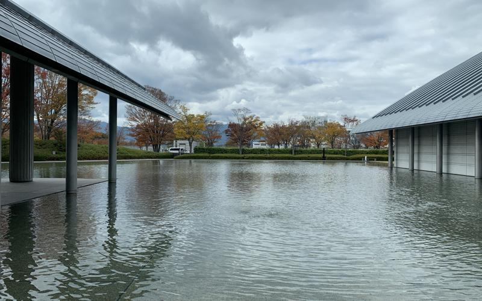
2026年10月
複数の洗濯・乾燥機が稼働するコインランドリーでは、電力契約の見直しが運営コスト削減の大きなカギになります。ある事業者では低圧電力から高圧受電に切り替え、年間数十万円規模の削減を実現しました。電力会社との交渉には設備容量の正確な把握が不可欠です。
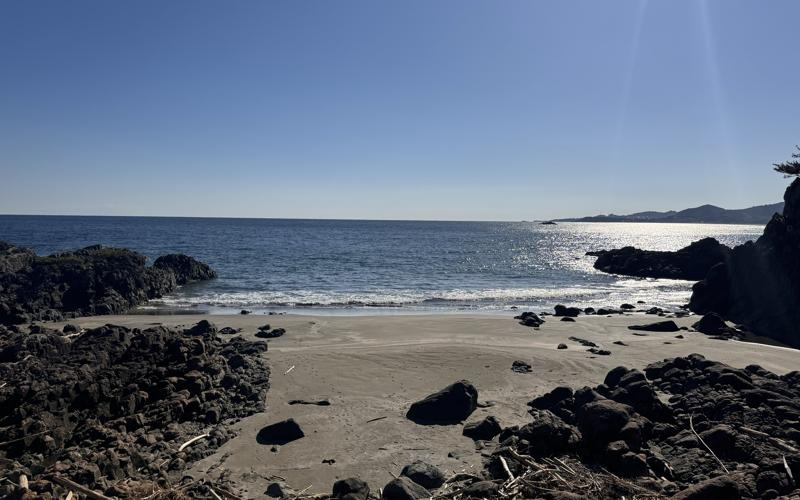
2026年10月
EV充電器の新規設置には電力会社への申請と工事計画届けが必要です。申請から受電開始まで通常2〜3カ月かかるケースが多いため、設置スケジュールには余裕を持たせることが重要です。補助金申請と並行して進める場合は採択前に工事を開始しないよう注意が必要です。
2026年10月
建物設備に関連する損害で保険が適用されるかどうかは、事前の保守点検実績が重要な判断材料になります。点検未実施や記録の不備があると保険会社から補償を減額または拒否されるケースがあります。保守記録の適切な保存と更新が、万一の際のリスク管理につながります。
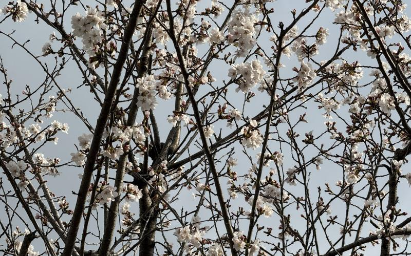
2026年10月
消防法では一定規模以上の建物に年1回の総合点検と消防署への報告義務が課されています。未実施が発覚した場合、建物の管理権原者は消防署からの指導・命令の対象となる可能性があります。点検会社との年間契約を結ぶことで期限管理と報告書提出を確実に行うことができます。
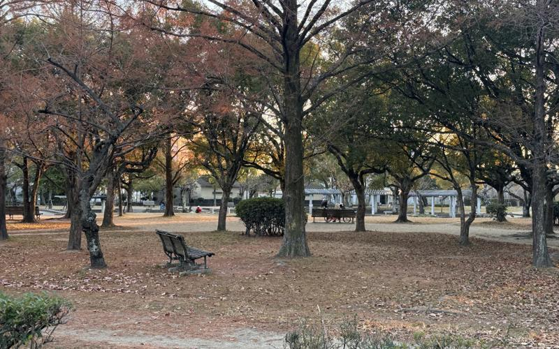
2026年10月
マンションへの宅配BOX設置は設置スペースの確保と管理規約の改定が必要なため、事前準備を怠ると導入までに時間がかかります。管理組合の総会議案として提出するためには3カ月以上前から動き出すことが現実的です。設置場所は宅配業者の動線と居住者の使いやすさを両立した場所を選定することが重要です。
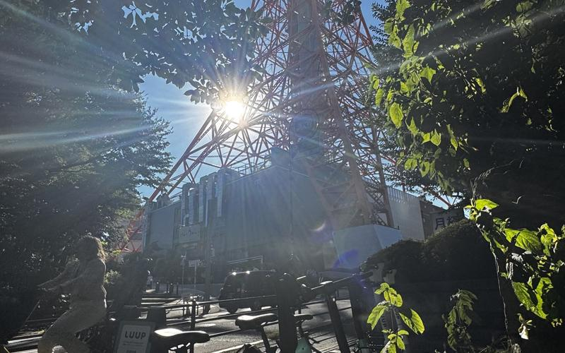
2026年10月
コインランドリーは無人営業が多く、犯罪や不正使用のリスクへの対策が重要です。防犯カメラは入退口・両替機・各機器の前を死角なくカバーできる配置が基本です。照明は店内全体を明るく保つことで抑止効果を高め、深夜の安全な利用環境を確保します。
2026年10月
EV充電器の課金方式には時間課金・電力量課金・定額制などがあり、マンション利用者のニーズに合わせた選定が必要です。決済システムはICカード・スマートフォンアプリ・クレジットカードなど複数の方式が普及しており、管理の手間と利便性のバランスで選ぶことが重要です。導入後の変更が難しい場合もあるため、拡張性の高いシステムを選ぶことが推奨されます。
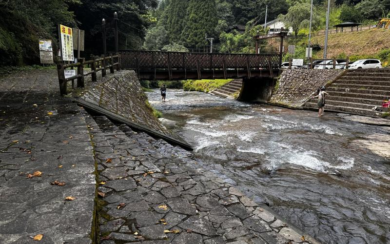
2026年10月
給水管や排水管の水漏れは被害が広がる前の迅速な初動が重要です。止水栓の位置確認・電気系統への二次被害防止・写真記録の三つが初動の基本です。被害状況の正確な記録は保険申請にも活用できるため、現場写真の撮影を習慣化することが推奨されます。
2026年10月
設備保守の現場では熟練技術者の高齢化と若手育成が共通の課題です。OJTと座学を組み合わせたカリキュラムの整備、点検手順書の標準化、デジタルツールを活用した知識共有が効果的な育成手法として注目されています。定期的な技術評価と教育投資が長期的な品質維持につながります。
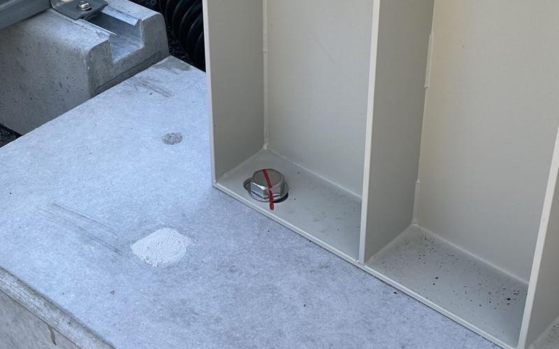
2026年10月
太陽光発電架台の締結ボルトにはマーキングを施すことで緩みを視覚的に管理する手法が有効です。設置後1年を目安に初回確認を行い、以降は年1回のサイクルで増し締め点検を実施することが推奨されます。緩みを放置すると架台変形や配線断線につながるため、早期発見がコスト削減にもつながります。
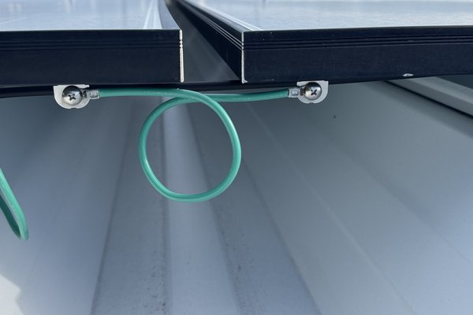
2026年10月
太陽光発電設備のアース線は感電防止と過電流保護の要です。現場では接地線の被覆破れ・端子部腐食・接続ボルトの緩みという3点が見落とされやすく、定期点検でこれらを確実に確認することが重要です。接地抵抗値が基準を超える場合は速やかに追加アース工事を検討してください。
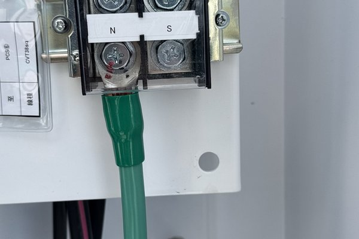
2026年10月
太陽光発電システムの端子台は発熱や腐食によって絶縁不良が生じやすい箇所です。点検では焦げや変色の有無・締付トルクの確認・防水パッキンの劣化を重点的にチェックします。不良箇所を早期に特定することで、大規模な修繕コストを未然に防ぐことができます。
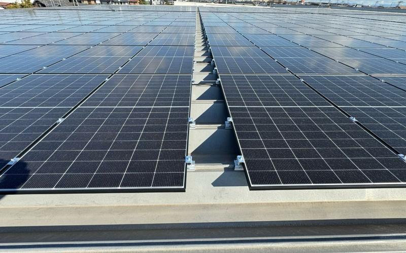
2026年10月
屋上太陽光発電設備は設置後5年を過ぎると発電量の低下や接続部品の経年劣化が顕著になります。ある設備管理会社では年2回の巡回点検と遠隔監視データの照合を組み合わせることで、不具合の早期発見率が大幅に改善されました。計画的な保守サイクルの構築が長期的な発電収益を守ります。
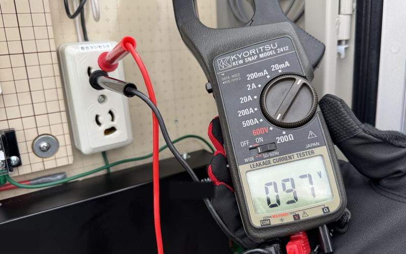
2026年10月
太陽光発電システムのコンセント側で計測できる電圧値から系統連系の状態を把握する方法は、現場担当者からよく質問を受けます。基本的な確認手順や電圧変動の許容範囲、電力会社への報告が必要なケースについてQ&A形式で解説します。
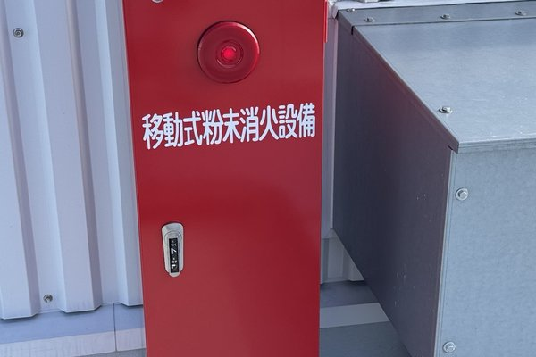
2026年10月
移動式粉末消火設備の側面から確認できる薬剤タンクの状態や圧力ゲージの指示値は、法定点検の見落としポイントになりがちです。タンク腐食・ホースの亀裂・ノズル目詰まりを現場で確認する方法と、使用期限到来時の交換手順について解説します。
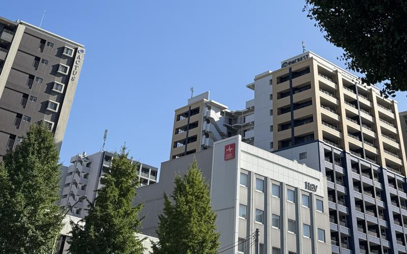
2026年10月
マンション外壁のひび割れやシール劣化に関して、管理会社からは「どのタイミングで専門業者に相談すべきか」という質問が多く寄せられます。外壁点検の法的義務・目視確認の限界・修繕積立金への影響についてわかりやすく解説します。
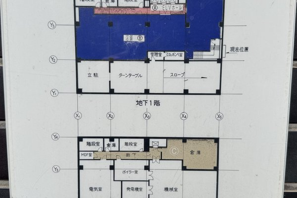
2026年10月
紙の設備台帳と手書き図面を使っていたある管理会社では、担当者交代のたびに設備の所在確認に時間を要していました。デジタル台帳とフロアマップを連携させた管理体制に移行したところ、点検の準備時間が大幅に短縮され、業者への引き継ぎもスムーズになりました。
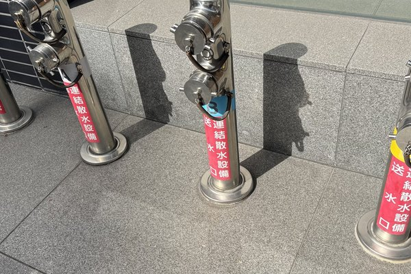
2026年10月
スプリンクラー設備の配管接続口は長期間の圧力負荷と湿気により腐食や微細漏水が発生しやすい箇所です。フランジ部やユニオン継手の目視確認と打音検査の方法、発錆進行時の補修・交換判断の基準について解説します。
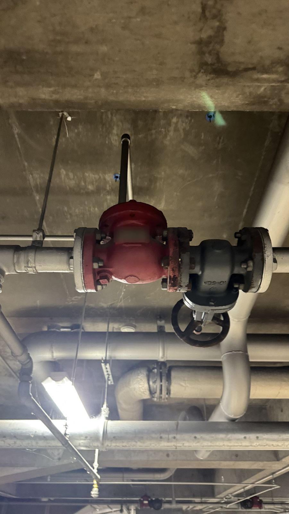
2026年10月
定期点検中にスプリンクラー制御バルブ下部から微量な滲みを確認し、早期修繕に至った現場事例です。滲みの原因はパッキン劣化によるものでしたが、放置すれば大規模な漏水事故につながる可能性がありました。発見から部品調達・修繕完了まで3日で完結した迅速対応のプロセスを紹介します。
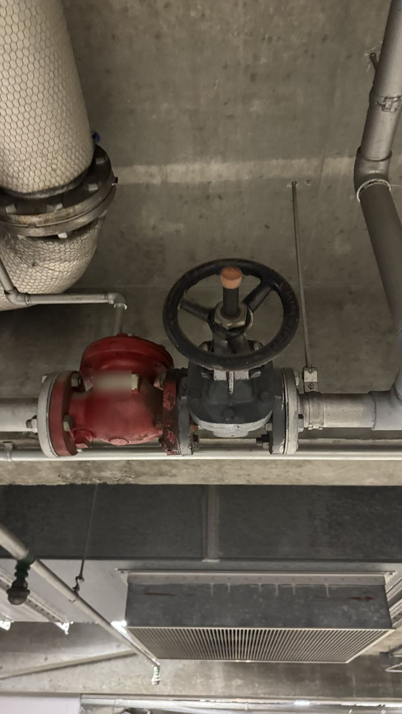
2026年7月
スプリンクラー配管に設置される逆止弁（チェックバルブ）は、水の逆流防止とシステム全体の圧力管理に重要な役割を担っています。劣化が進むと閉鎖不良による配管内の圧力損失・漏水につながり、警報バルブの誤作動を引き起こすことがあります。
点検時には弁体の動作確認・パッキンの劣化・配管接続部の錆の有無をセットで確認し、経年した弁は、状態に応じて予防交換を検討してください。
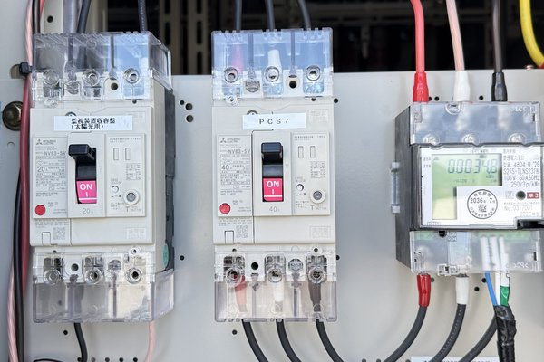
2026年7月
太陽光発電システムに付随する分電盤・接続箱は、経年による絶縁抵抗の低下や端子台の腐食が発電効率の低下と地絡リスクにつながります。経年した設備ほど、絶縁抵抗値の定期測定が欠かせません。
測定値が電気設備技術基準で定める値（使用電圧に応じて0.1〜0.4MΩ）を下回る回路は、原因の調査と改修が必要です。
異常なく見える外観でも数値による客観的な判定が重要です。
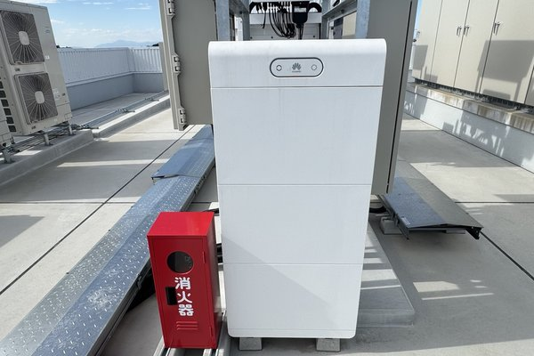
2026年7月
太陽光発電と組み合わせた蓄電池システムは、使用年数や充放電の回数に応じて容量が少しずつ低下し、停電時のバックアップ能力が落ちていきます。「満充電にならない」「停電時に早期に電源が落ちる」といった症状が更新サインです。
劣化診断には充放電サイクルデータの解析と専用テスターによる容量測定が有効で、早期の更新判断が安全確保とコスト最適化につながります。
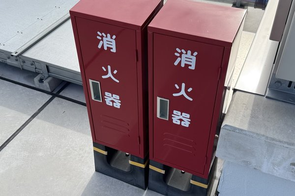
2026年7月
屋上や建物外壁に設置される消火器ボックスは、紫外線・雨水・排気ガスにさらされ続けるため、内部の消火器本体より先にボックス自体が劣化するケースがあります。特に扉の開閉不良・ロック機構の腐食・標識の退色が現場で多く確認される不具合です。
半年ごとの機器点検に合わせてボックスの外観・構造を確認し、経年劣化が著しいものは早期更新を検討することが管理品質の向上につながります。
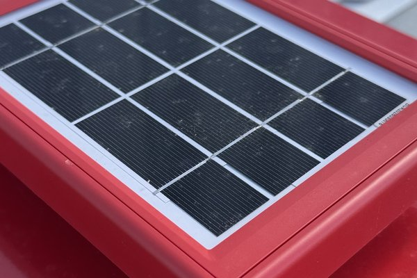
2026年6月
屋上に太陽光パネルを後付け設置した建物では、消火器・消火設備の設置位置が変わり、既存の消防設備との整合性が損なわれるケースがあります。パネル設置後に消火器ボックスへのアクセスが遮られていないか、また延焼リスクの変化に対応した設備レイアウトの見直しが行われているかを確認することが重要です。
改修時には消防署への届け出が必要な場合もあるため、設備保守担当と連携した管理体制の構築をお勧めします。
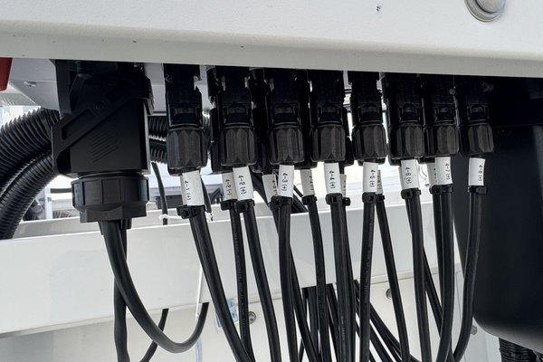
2026年6月
太陽光発電システムのパワーコンディショナー（PCS）は、ケーブル接続部の緩みや絶縁不良が発電量低下や火災リスクにつながります。現場では端子の変色・焦げ・コネクタの嵌合不足が多く確認されており、経年した設備では、増締めと絶縁抵抗測定をセットで行う点検が有効です。
管理会社として年次点検の際にPCS周辺を重点確認する体制を整えることで、重大トラブルの未然防止につながります。
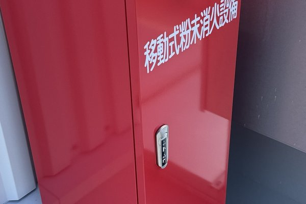
2026年6月
地下駐車場や屋外タンク付近に設置される移動式粉末消火設備は、ホースの劣化・薬剤の固結・圧力ゲージの故障が代表的な不具合です。消防法上は6か月ごとの機器点検と1年ごとの総合点検が義務付けられており、薬剤の充填や耐圧試験が必要になる場合があります。
古い設備は部品の調達が難しくなる場合もあるため、点検時に担当業者へ更新時期の相談をすることをお勧めします。
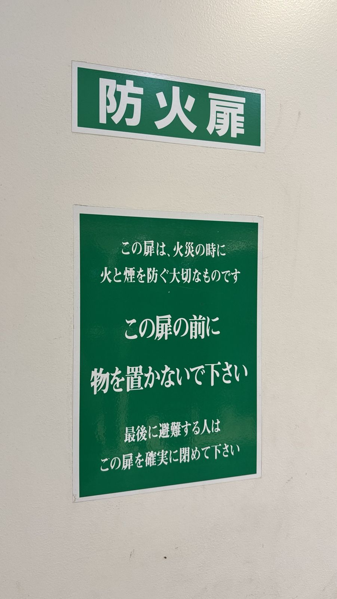
2026年6月
防火扉は火災時に延焼を防ぐ重要な設備ですが、扉本体の変形・ヒンジの固着・自動閉鎖装置の動作不良が、代表的な不具合です。また「防火設備」の法定標識が剥落・退色していると消防検査で指摘される事例もあります。
点検では扉の閉鎖確認だけでなく、ラッチの掛かり具合と煙感知器連動の動作テストを必ず実施することをお勧めします。
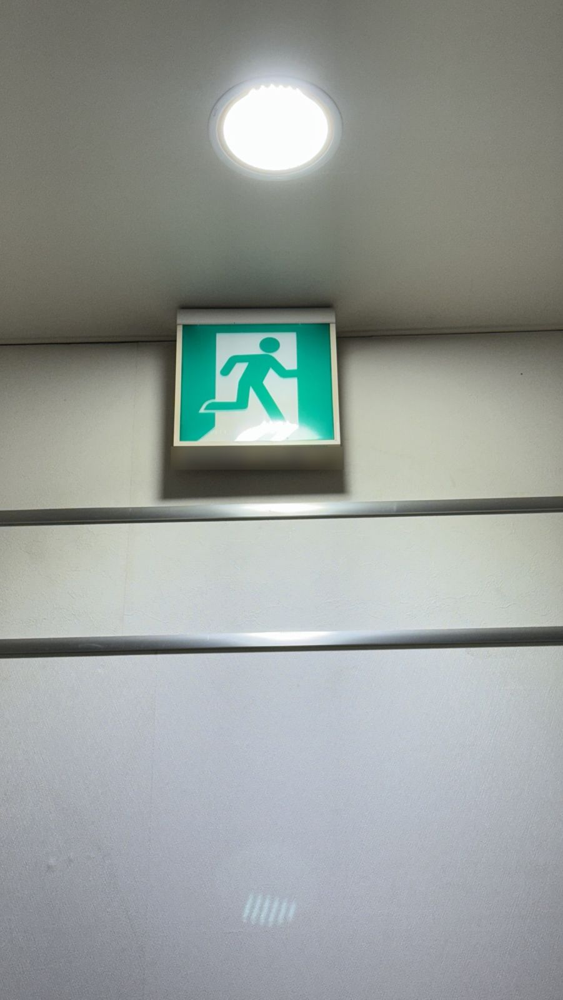
2026年6月
誘導灯に内蔵された蓄電池は、4〜6年が交換の目安とされており（一般社団法人日本照明工業会）、法定点検でも点灯の切り替え試験を行います。停電時に誘導灯が点灯しないと避難の妨げになるだけでなく、消防設備の不備として指摘の対象になります。
交換費用は器具規模によって異なりますが、蓄電池のみの交換と器具ごとの更新ではコスト差が大きいため、経年数と残存容量に応じた判断が重要です。
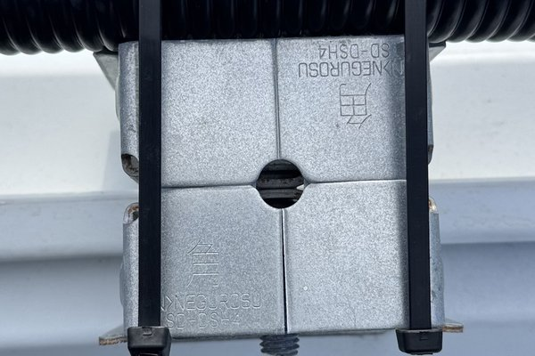
2026年6月
電気系統の配線を支えるケーブルダクトや支持金具は、経年により腐食やひび割れが進行し、電線の保護機能が低下します。特にビルの屋上や地下設備室など、湿気や温度変化にさらされる環境では劣化が早く、目視点検では見えにくい内部の変形も見逃せません。
定期点検では金具の締め付けトルク確認と錆の進行度評価をセットで実施し、早期交換を検討することが大切です。
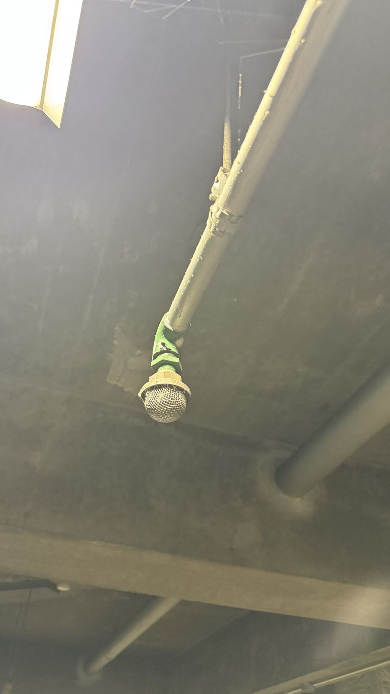
2026年6月
駐車場や機械室に設置される泡消火設備は、ヘッドの目詰まり・泡消火薬剤の劣化・バルブ類の固着が代表的な不具合です。
特に長期間作動しない設備ほど内部の腐食や薬剤の劣化が進行しており、点検時には薬剤サンプリングと流量確認を必ずセットで実施することが重要です。
誤作動時の泡剤漏洩は清掃コストが高額になるため、防液堤や排水溝の状態も合わせて確認することをお勧めします。
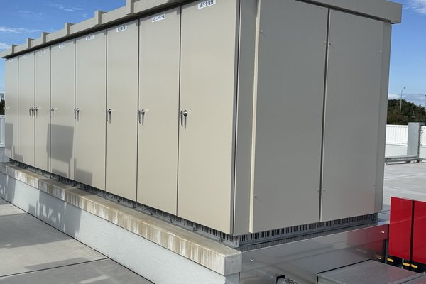
2026年6月
屋上設置のキュービクルは降雨・結露・直射日光にさらされるため、室内設置に比べて外壁の腐食・パッキンの劣化・排水口の詰まりが発生しやすい環境です。
梅雨・台風シーズン後は特に雨水浸入のリスクが高く、早期発見のために扉の密閉性と基盤部への錆の有無を重点的に確認する必要があります。
定期的な防錆塗装と気密処理を組み合わせることで、重大な電気事故を未然に防ぐことができます。
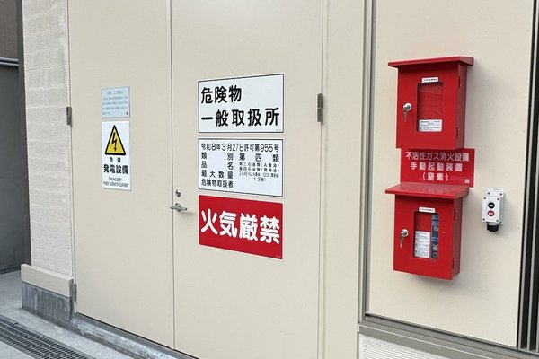
2026年6月
消防用の非常電源である非常用発電機は、年1回の総合点検で、負荷運転（定格出力の30%以上）または内部観察などによる確認が必要です。
予防的な保全策を講じている場合は、負荷運転などの周期を6年に1回にできます（2018年の点検基準改正）。
運転中は燃料残量・冷却水温・排気の色や量を確認し、結果を点検票に記録して保管してください。
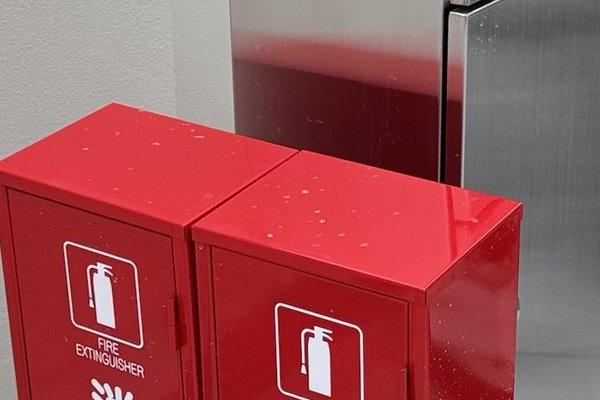
2026年6月
連結送水管は竣工後または設置後10年が経過したものは3年ごとの耐圧試験が必要です。
試験の日程は、建物の利用者への周知と合わせて早めに調整してください。
日常の確認では、放水口の扉の開閉・キャップの有無・周囲に物が置かれていないかを見ておくと安心です。

2026年6月
消防法では、危険物を貯蔵・取り扱う施設に対して標識・掲示板の設置が義務付けられています。
文字の褪色・錆・破損は法令違反となるリスクがあり、点検時に見落とされがちな項目です。
①掲示内容（品名・数量・注意事項）の最新情報との一致確認、②設置位置の視認性と固定状態の確認、③素材の腐食・変形・文字の視認性低下の目視点検、この3点を定期確認のルーティンに加えることで、行政指導リスクを未然に防ぎます。
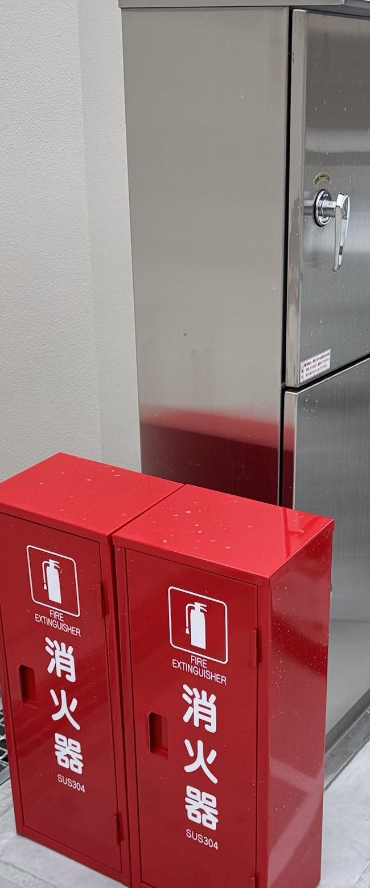
2026年6月
地下ピットや地下機械室は、湿気・結露・浸水の影響を受けやすく、設備機器の腐食や電気系統のショートにつながるリスクがあります。
①排水ピットおよびポンプの動作確認と水位センサーの点検、②外壁・床面の亀裂・染み出しの目視点検と補修履歴の確認、③換気ファンの動作確認と湿度計の計測値記録が重要です。
梅雨・台風シーズン前の集中点検が、設備の長寿命化と緊急対応コスト削減に直結します。

2026年6月
マンション・ビルに設置される灯油・重油の危険物タンクは消防法に基づく点検義務があります。
①漏洩検知装置の動作確認と貯蔵量の届出状況の確認、②防油堤（流出防止設備）の損傷・亀裂の目視点検、③給油バルブ周辺の油染みや配管腐食の有無の確認が重要です。
点検を怠ると火災リスクだけでなく、消防署からの改善命令にもつながるため、年間スケジュールへの組み込みが不可欠です。

2026年6月
発電機や空調機を収納する機械室は、設備性能の維持に適切な環境管理が欠かせません。
①換気口フィルターの詰まりは設備の過熱・故障リスクを高めるため定期的な清掃が必要、②室内の湿気対策（除湿・排水路確認）を怠ると腐食や電気トラブルの原因に、③照明器具の球切れは点検作業者の安全に直結するため予防交換のスケジュール化が重要です。
小さな管理の積み重ねが設備の長寿命化につながります。

2026年6月
電気室・サーバー室などに設置されるガス系消火設備は、誤作動時の酸素欠乏リスクがあるため点検精度が特に重要です。
①起動回路の遮断弁と安全ピンの状態確認、②ガス量の重量測定（貯蔵容器の圧力低下は即時交換が必要）、③手動起動装置と自動起動の切替スイッチが適切な位置にあるかの3点を定期的にチェックすることで、誤作動・不作動どちらのリスクも低減できます。
設備の特性上、点検は必ず有資格者が実施し、結果を書面で保管してください。

2026年5月
地下に設置された消火ポンプや貯水槽は目視確認が難しく、劣化に気づきにくいのが課題です。
①ポンプの自動起動試験（圧力スイッチの感度ずれは不作動の原因）、②呼水槽の水位と逆止弁の動作確認、③配管の錆・腐食チェック（特に貯水槽接続部は腐食が進行しやすい）の3点を、半年ごとの機器点検に合わせて確認することが基本です。
現場では「ポンプが動いているように見えて実は吐出圧が低下していた」というケースも多く、数値による確認が欠かせません。
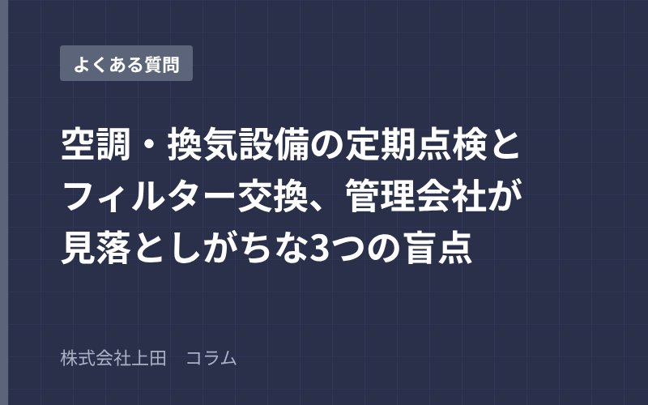
2026年5月
共用部の空調・換気設備はフィルター詰まりによる効率低下が起きやすく、定期的な清掃と交換が欠かせません。
冷媒ガスの漏れ確認や室外機周辺の障害物チェックも年2回を目安に実施することで、夏冬シーズン前の突発故障を防ぐことができます。
フィルターの清掃周期は、利用状況とメーカーの取扱説明書に合わせて決めてください。
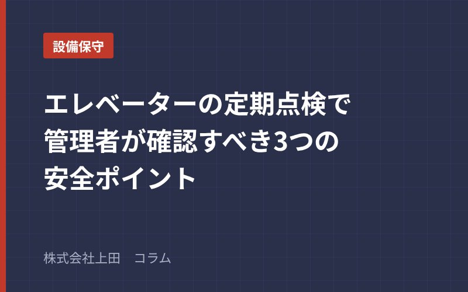
2026年5月
エレベーターは毎日多くの入居者が利用する重要設備です。
建築基準法第12条に基づく年1回の定期検査に加え、保守契約に基づく定期保守でドア開閉の異常・異音・非常通話装置の動作を確認することが、閉じ込め事故の予防につながります。
管理会社は点検記録の保管と保守会社との定期報告体制を整えておくことが重要です。
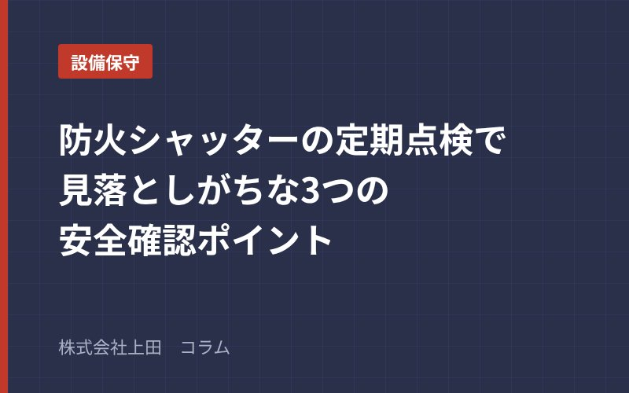
2026年5月
防火シャッターは建築基準法の防火設備で、年1回の防火設備定期検査の対象です。
作動不良は延焼拡大の直接原因になります。
定期点検で特に確認すべき3項目は①煙感知器との連動動作確認（感知器作動時に正常に降下・閉鎖するかテスト実施）②降下経路上の障害物確認（シャッター直下や降下範囲内に物品が置かれていないか定期パトロール）③スラット・ガイドレールの変形と潤滑状態確認（浮きや歪み、固着は緊急時の動作不良につながる）。
設備台帳の事前整備が点検品質を左右します。
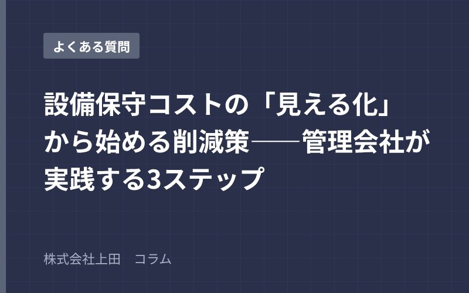
2026年5月
設備保守コストの削減は「とりあえず値下げ交渉」から入ると失敗します。
まず年間費用を「法定点検費」「予防保守費」「緊急修理費」の3区分で集計しコスト全体を可視化することが第一ステップです。
次に設備別の単価と対応範囲を比較し、重複発注や割高な緊急対応がないかを検証します。
最後に複数設備を一括委託することで段取りコストを削減し、管理会社の窓口業務も効率化できます。
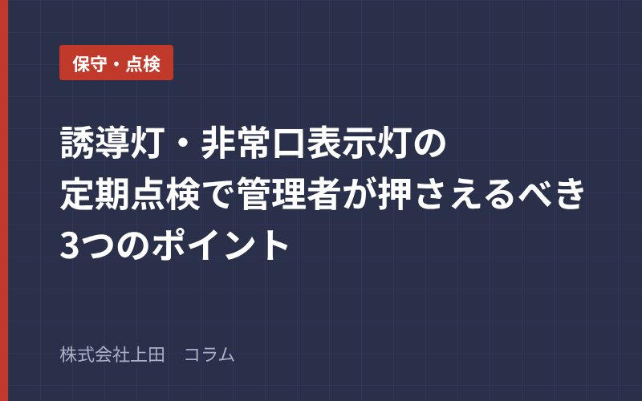
2026年5月
誘導灯・非常口表示灯は停電時の避難誘導に不可欠な設備で、消防法により6か月ごとの機器点検と1年ごとの総合点検が義務付けられています。
点検の3ポイントは①ランプ・バッテリーの動作確認（非常時に規定時間〈一般に20分、大規模な建物などは60分〉以上点灯するか切り替え試験を実施し、バッテリー劣化は早めの交換が必要）②表示面の劣化・変色チェック（経年で表示面が黄ばむと視認性が低下し、照度基準を下回ると不適合となる）③配置・向きの適切性確認（間仕切り変更や什器配置換えで死角が生じていないか、避難経路全体で再確認することが重要）。
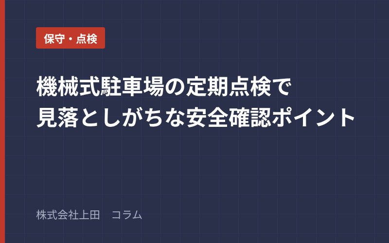
2026年5月
機械式駐車場（立体・地下・タワー式）は可動部が多いため、メーカーや保守会社の基準に沿った定期点検が欠かせません。
点検の重要ポイントは①安全装置の動作確認（障害物検知センサー・非常停止ボタン・インターロックが正常に機能するか実機テストで確認）②チェーン・ワイヤーロープの伸びと摩耗（切れ残りが生じる前に交換基準値と照合し、給油状態も同時確認）③パレット・昇降路の変形・腐食チェック（地下式は湿気による腐食が進みやすく、床面の水はけ状況と合わせて評価する）。
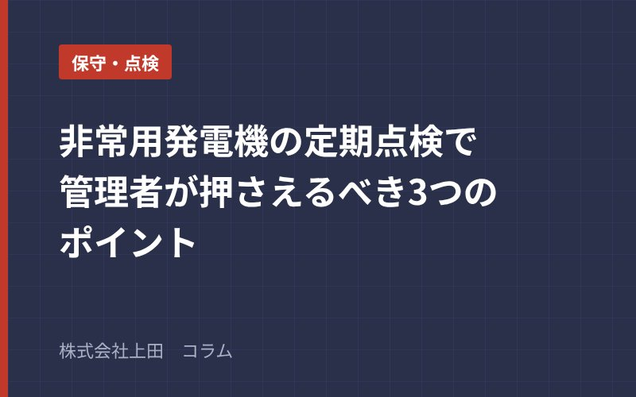
2026年5月
非常用発電機は停電時に消防設備・避難誘導灯・エレベーターを継続動作させる重要な設備で、消防法に基づく点検では、年1回の総合点検で負荷運転または内部観察などによる確認が必要です。
点検で特に重要な3項目は①エンジン始動試験（自動・手動双方の始動を確認し、規定電圧・周波数に達するまでの時間を記録する）②冷却水・潤滑油の劣化確認（冷却水の錆・油脂汚染や潤滑油の粘度低下は内部損傷の前兆で、交換サイクルの厳守が重要）③燃料（軽油）の劣化と在庫量確認（長期保管で酸化した軽油は噴射ノズルを詰まらせるリスクがあり、購入後1年以上経過した燃料は入れ替えが推奨される）。
負荷試験は専門業者との計画的な連携が必要です。
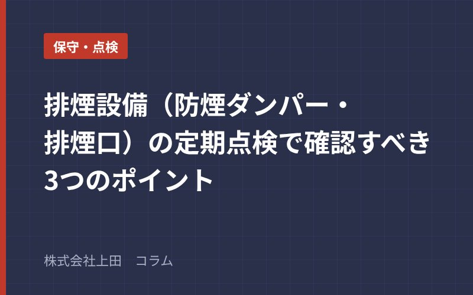
2026年5月
排煙設備は火災時の煙を屋外へ排出して避難経路を確保するための重要な消防・建築設備で、建築基準法の定期検査や消防法の点検の対象になります。
点検で特に重要な3項目は①防煙ダンパー（FD・SFD）の開閉動作確認（手動・自動双方の作動を確認し、閉鎖後の気密性が確保されているかを実測で確かめる）②排煙口・排煙機の風量測定（排煙口の開放操作と排煙機の起動を連動させて確認し、設計どおりの風量が確保できているかを測定する）③連動制御盤の表示・予備電源確認（ダンパー動作信号が制御盤に正常に伝達されているか確認し、予備電源への自動切換えを試験する）。
経年したダンパーは腐食による固着が起きやすく、状態に応じて交換を検討してください。

2026年5月
マンション・施設の給排水設備は日常的に使用される一方、異常が顕在化しにくい部位です。
①ポンプ・加圧給水装置の動作確認（起動・停止時の異音や圧力計の数値推移は初期不具合の早期発見につながる）
②露出配管の腐食状態確認（屋外や地下部の配管は結露・酸化による腐食が進みやすく、塗膜の浮きや錆汁の滲みが交換サインとなる）
③排水桝・トラップの詰まり点検（バイオフィルムや異物堆積は下水臭・逆流の原因となり、目視点検と定期清掃が重要）。
給排水設備は電気・消防設備と異なり法定点検の頻度が少なく自主管理が重要で、突発故障のリスクを下げるために年1〜2回の定期巡回が推奨されます。

2026年5月
高圧受変電設備（キュービクル）は年1回の法定点検が義務ですが、点検間の自主確認も停電リスクを下げるうえで重要です。
①変圧器・開閉器の絶縁劣化確認（変圧器の異臭・騒音・外装の変色は内部劣化のサインで、長期間使用している場合は計画的な更新の検討が必要）
②接続部の腐食・締め付け緩み（屋外設置では雨水・結露による端子腐食が接触抵抗増大を招き、過熱や停電の原因となる）
③避雷器・電力ヒューズの状態（落雷が多い地域では避雷器の動作カウンターの確認と外観点検を実施し、限流ヒューズは規定値以上の溶断で即交換が必要）。
キュービクルの突発停電はテナント・居住者に大きな影響を与えるため、停電を伴う年次点検は保安法人との計画的な連携が推奨されます。
東京23区の消防設備点検は、株式会社上田へ
無料でお問い合わせ